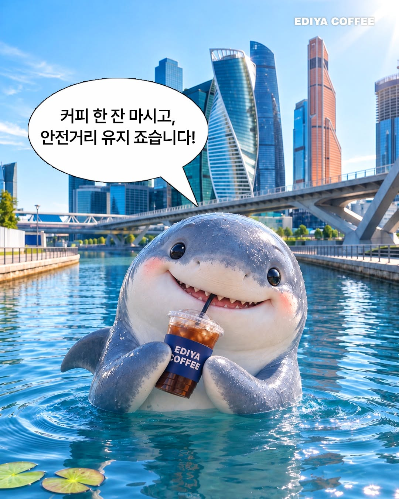
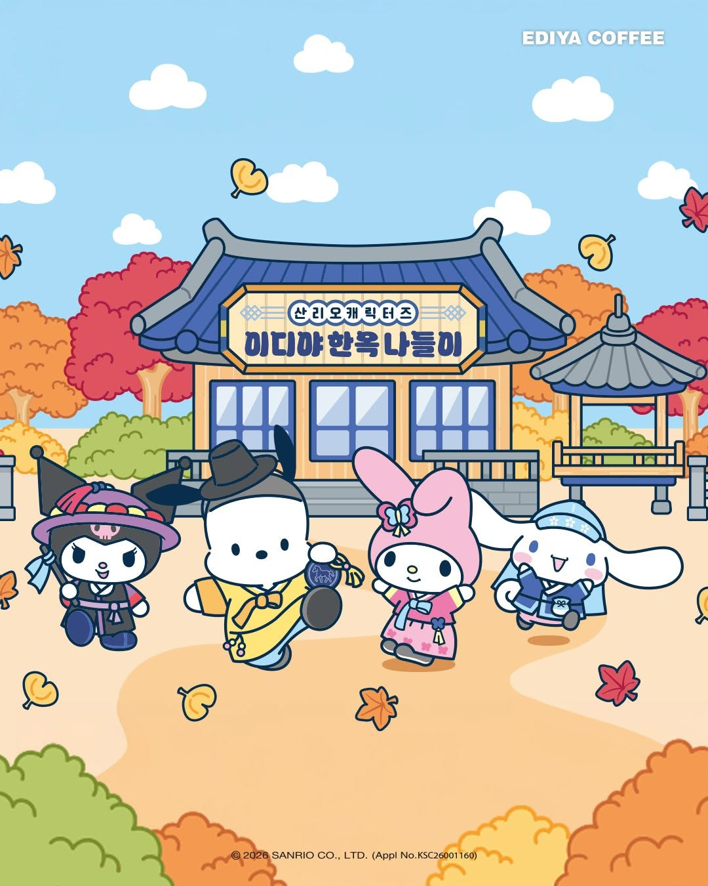
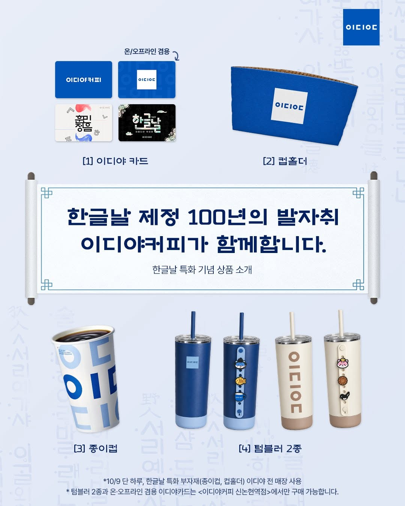
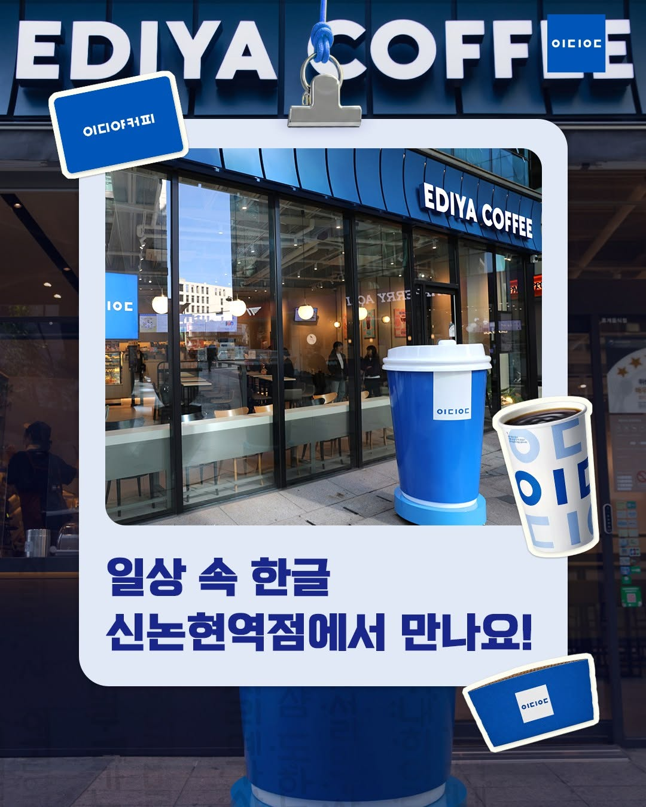
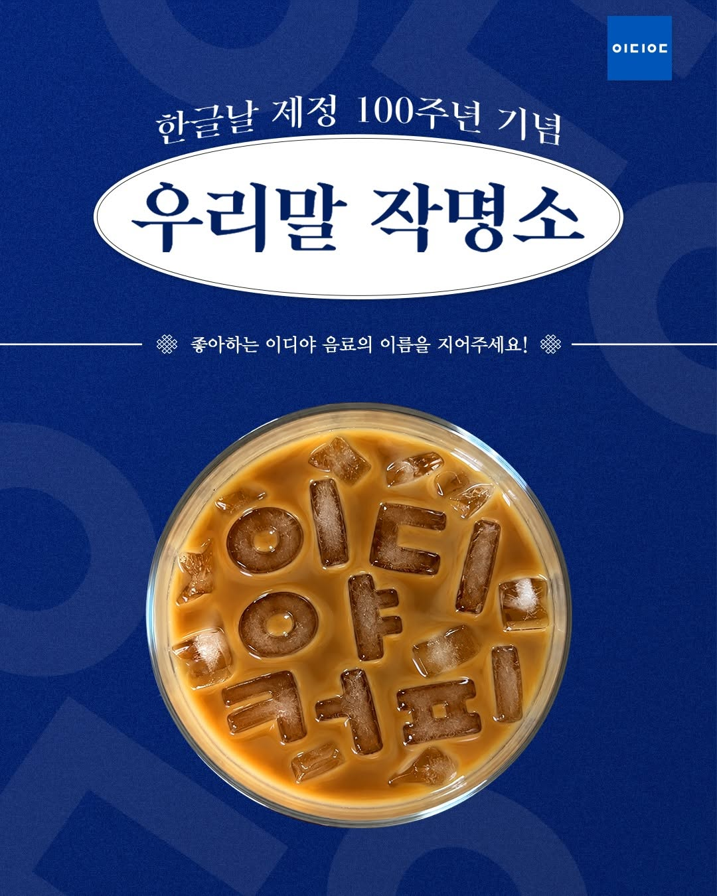

“영어로만 되어 있는 타브랜드 커피 텀블러나 유명 텀블러보다 훨씬 이쁘고 소장하면 뿌듯할 것 같아요”
다른 상품과의 비교, 한글의 미감, 소장 이유를 직접 표현했습니다. 단, ‘갖고 싶은 이유’를 응모 조건으로 제시한 게시물입니다.
이디야커피 공식 계정의 과거 공개 게시물과 한글날 캠페인을 함께 비교합니다. 숫자의 크기뿐 아니라 고객이 어떤 이유로 이디야를 좋아했는지 살펴보는 팀 공유용 분석 화면입니다.
한글 디자인을 소장하고 싶다는 평가, 새롭게 꾸민 매장에 대한 관심, 음료에 직접 우리말 이름을 짓는 참여가 확인됐습니다. 좋아요·댓글은 규모를, 고객의 말은 그 이유를 보여줍니다.
이미지는 공식 인스타그램 게시물의 실제 썸네일입니다. 각 이미지를 누르면 원본 게시물을 확인할 수 있습니다.
댓글이 길다고 진심인 것은 아닙니다. 무엇을 구체적으로 좋아했고, 고객이 어떤 행동을 했는지 구분했습니다.
“영어로만 되어 있는 타브랜드 커피 텀블러나 유명 텀블러보다 훨씬 이쁘고 소장하면 뿌듯할 것 같아요”
다른 상품과의 비교, 한글의 미감, 소장 이유를 직접 표현했습니다. 단, ‘갖고 싶은 이유’를 응모 조건으로 제시한 게시물입니다.
“한글 텀블러 의미있고 예쁘고 환경도 살리고 좋아요💙💙”
예쁘다는 반응을 넘어 사용 가치와 개인적인 의미를 말합니다. 실제 구매나 사용 여부는 미확인입니다.
“바닐라라떼는 달보드레 우유차!”
고객이 제품의 맛을 해석하고 새 이름을 만들었습니다. 이벤트 참여라는 동기 안에서도 브랜드와 상호작용한 방식이 차별적입니다.
“그냥 이걸로 아예 리브랜딩하는게 나을지도...”
새 매장 디자인을 향후 브랜드 이미지와 연결한 단일 의견입니다. 전체 고객의 선호로 일반화할 수 없습니다.
공개 댓글 표본 60건 · 계정 태그와 기호 제외
상세 설명이 실제 사용 의향과 브랜드 애정의 증거가 되는지는 별도 검증이 필요합니다.
신논현역점 105건, 작명소 110건 표본
작명소는 짧은 댓글도 창작 참여가 될 수 있어, 문장 길이만으로 평가하지 않았습니다.
한글날이 주인공입니다. 다른 콘텐츠는 앞으로 팬 관계를 만들 때 필요한 고객 행동을 구분하기 위한 비교 자료입니다.

“여기가 이디야 죠스점입니까?”처럼 고객이 농담을 만들고 브랜드와 대화했습니다.
한글날 적용: 경품 없이도 고객이 자발적으로 반응하고 공유할 여지를 만들기.

이전 굿즈 소장 경험과 출시일 방문 계획 등이 댓글에서 확인됩니다.
한글날 적용: 한 번의 호감을 다음 시리즈·소장·방문 행동으로 연결하기.
한글을 한시적 기념일 장식이 아니라, 다시 찾고 싶은 굿즈·매장 콘텐츠로 확장 시험합니다.
확인 지표: 저장·공유·실제 판매·소진율우리말 작명소처럼 고객이 아이디어를 보태고, 실제 브랜드 활동에 반영하는 참여를 늘립니다.
확인 지표: 실질 창작 댓글·자발 공유·재참여반응이 다음 구매와 참여로 이어지는지 확인합니다. 방문이나 팬 증가를 현재 공개 SNS 지표만으로 단정하지 않습니다.
확인 지표: 반복 참여·재방문·멤버십한글날 콘텐츠 4건을 중심으로 고객의 디자인 평가·창작 참여·브랜드 인식·실제 행동을 분리합니다. 부캉이와 산리오는 '무엇이 팬 관계로 이어지는가'를 판단하기 위한 참고 사례입니다.
숫자만으로는 볼 수 없었던 지점을 실제 댓글과 비교 콘텐츠에 연결했습니다. 아래 관점을 클릭하면 세부 근거와 실행 제안이 바뀝니다.
진심을 측정한 점수가 아닙니다. 댓글에서 태그·기호·이모지를 제거하고, 60자 이상이면서 해당 상품·콘텐츠를 언급하는 비중을 계산한 설명형 반응 지표입니다.
한글 굿즈는 산리오 티징에 가까운 수준으로 상품의 매력과 의미를 길게 설명했습니다. 캐릭터를 빌리지 않고 이디야 자체 디자인만으로 이 반응을 만든 점이 중요합니다. 반면 산리오는 이미 여러 차례 굿즈를 모은 고객의 과거 행동도 나타나 한글날보다 강한 팬 관계의 증거를 보여줍니다.
댓글 수만큼 중요한 것은 그 댓글이 브랜드에 무엇을 남기는지입니다. 한글날 세 가지 이벤트에서 이를 비교할 수 있습니다.

확인: 제품·디자인 관련 단어 포함 댓글 93.3%(60건 표본). 실제 사용과 소장 기대를 설명하는 댓글도 존재합니다.
해석: 이디야 자체 디자인이 고객의 선택·소장 이유로 번역될 가능성.
한계: 댓글 주제 자체가 '갖고 싶은 이유'였으므로 호평 비율에 선택 편향이 있습니다.

확인: 댓글 표본 105건 중 친구 태그 포함 82.9%, 20자 이하 짧은 댓글 62.9%.
해석: '가자'는 관심이나 응모 행동이지 실제 매장 방문 증거는 아닙니다.
기회: 매장 사진 촬영, 자연 게시물, POS 방문 변화까지 연결해 검증.

확인: '달보드레 우유차', '밤쉼커피' 등 맛·사용 상황을 활용한 새 이름이 다수 등장했습니다.
해석: 친구 태그보다 브랜드·제품을 더 깊이 다루는 창작형 행동입니다.
한계: 창작 참여와 브랜드 애착·재방문은 별개의 결과입니다.
한글날의 의미는 브랜드 팬 '증가'를 입증했다는 데 있지 않습니다. 팬으로 발전할 수 있는 반응의 종류가 나타났다는 데 있습니다.
조회·좋아요·확산
공개 수치 확인한글 굿즈의 디자인·소장 가치 언급
표본에서 확인작명소의 이름 창작, 부캉이의 자발적 농담
게시물별 확인한글 굿즈 실판매·실사용·매장 방문
내부 데이터 필요연속 구매·반복 참여·시리즈 기대
추적 조사 필요반응을 만드는 주체가 다릅니다. 전체 좋아요 순위는 참고로 유지하되, 한글날의 브랜드 기여는 이디야 자체 기획 사례와 별도로 비교합니다.
변우석·보이넥스트도어 등. 좋아요가 높아도 이디야 브랜드 자체의 애정과 분리해야 합니다.
봐야 할 지표: 팔로워 신규 유입 → 매장·상품 체험 → 브랜드 재방문
산리오·리락쿠마·포켓몬 등. 캐릭터의 매력과 이디야의 제품·매장 매력을 구분해서 봅니다.
봐야 할 지표: 구매·소진율 → 한정 굿즈 수집 → 다음 제휴 재방문
한글날·부캉이·점주 스토리 등. 단순 조회를 넘어 자발적 놀이·공감·브랜드 칭찬을 봅니다.
봐야 할 지표: 비경품 자발 반응 → 창작·공유 → 반복 참여
경품이 있는 2026년 게시물끼리 비교하면 한글날은 좋아요가 높았지만, 댓글 수는 거의 차이가 없었습니다.
연도, 경품 여부, 형식, 중앙값을 선택해도 한글날과 다른 콘텐츠의 반응 차이가 유지되는지 확인할 수 있습니다.
현재 선택된 조건 내 비교
가로: 좋아요 · 세로: 댓글 · 한글날 강조
실행: 동일 디자인을 활용한 일반 게시물과 짧은 제품 사용 영상을 나눠 테스트합니다. 가능하면 시기·노출 조건을 유사하게 맞춥니다.
확인: 저장·공유, 자발적 디자인 언급, 실제 굿즈 클릭·판매.
판단: '예쁘다'에서 '갖고 싶어 실제 산다'로 이어지는지.
실행: 우리말 작명소의 후속편을 경품 없이 운영하고 고객 작품을 실제 게시물·매장에 반영합니다. 사전 이용·저작권 동의를 확인합니다.
확인: 창작 댓글, 자발적 재공유, 다음 회차 재참여.
판단: 일회성 응모에서 다음 활동에 대한 기대가 생기는지.
실행: 신논현역점에서 같은 요일·시간대 기준 방문·매출과 비슷한 매장 변화를 비교합니다.
확인: 방문객, 굿즈 구매, BI 선호도, 응대·운영 부담.
판단: 전국 확장 전 직영 파일럿의 사업성과 실행성을 검증.
이하 자료는 결론의 재현성과 추가 분석을 위한 부록입니다. 한글날 외 게시물 전체를 조회할 수 있지만, 본 보고의 중심은 한글날 캠페인입니다.
| 순위 | 날짜 | 유형 | 원본·캡션 | 좋아요 | 댓글 | 형식 | 이벤트 |
|---|---|---|---|---|---|---|---|
| 불러오는 중 | |||||||